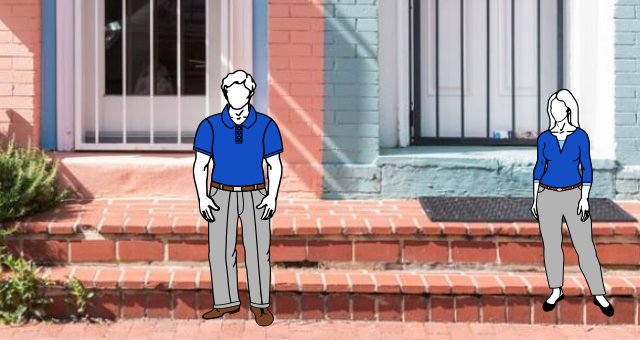

Toggle navigation
國立臺北科技大學資訊工程系
回頂端
個案研究 - 人臉辨識
摘要
透過 YOLOv2 演算法達成人臉識別功能
程式設計
使用CV2 Writer將辨識過後的frame儲存起來。
訓練環境
作業系統: ubuntu16.04
訓練框架: Darknet
訓練演算法: YOLOv2
標記演算法: labelimg
環境語言: Python 3.6, CUDA 9.0, OpenCV
應用
影像虛擬人物即時置換
1.增加Yolo對目標物偵測精準度
2.透過Yolo建置模型，針對目標角色，替換成動畫人物
偵測人物
虛擬人物置換
